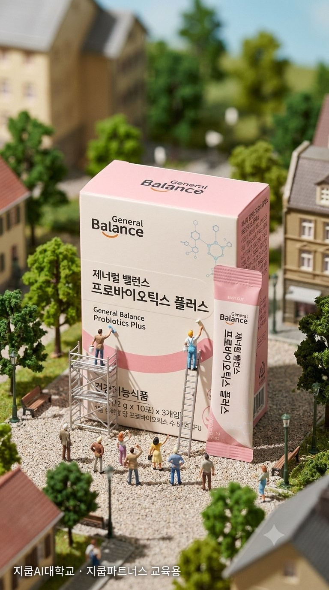

오늘의 프롬프트AI로사쌤 · 12번
미니어처 마을에 우뚝 선 거인 제품 광고
제품 사진 한 장으로 광고 사진을 만들고, 그 사진으로 영상까지 만드는 두 단계예요. 어떤 제품이든 쓸 수 있어요.
1단계광고 사진 만들기

제미나이나 챗GPT에 내 제품 사진을 먼저 올리고, 아래 프롬프트를 붙여넣으세요.
업로드한 이미지 속 제품을 사용한 실사 고급 광고 사진. 제품은 형태, 비율, 색상, 라벨 디자인, 인쇄된 글자를 바꾸지 말고 다시 디자인하지 말 것.
장면: 제품 1개가 고층 건물만큼 거대한 크기로 작은 미니어처 마을 한가운데에 우뚝 서 있음. 제품 아래에는 손톱만큼 작은 미니어처 사람 모형들이 모여 제품을 올려다보거나, 제품 옆에 세운 작은 비계와 사다리에 올라 표면을 닦고 있음. 주변에는 작은 나무와 가로등, 벤치, 자갈길이 정교하게 꾸며져 있음.
조명과 구도: 맑은 낮의 부드러운 햇살, 틸트 시프트 렌즈 느낌으로 위아래가 살짝 흐려져 장난감 모형처럼 보이는 얕은 심도, 살짝 위에서 내려다보는 구도, 제품이 화면 중앙에 크게.
고해상도 4K 실사, 미니어처 모형의 디테일과 제품 라벨까지 선명하게, 미니어처 인물은 얼굴이 식별되지 않는 작은 모형, 제품에 원래 있는 글자 외에는 글자·간판·로고·워터마크 없음, 세로 9:16.
2단계광고 영상 만들기
1단계에서 만든 사진을 영상 도구에 첫 장면으로 올리고, 아래 프롬프트를 붙여넣으세요.
첫 프레임의 제품 형태, 색, 라벨, 인쇄된 글자를 끝까지 그대로 유지하고 일그러지거나 바뀌지 않게. 제품은 움직이지 않고 제자리에 서 있음.
0~4초: 작은 미니어처 사람들이 제품 아래를 분주히 오가고, 비계 위의 사람들이 제품 표면을 닦으며, 작은 크레인이 천천히 움직임. 구름 그림자가 마을 위로 지나감.
4~7초: 아래에 모인 미니어처 사람들이 제품을 올려다보며 손을 흔들고 박수를 치고, 작은 깃발과 풍선이 올라감.
7~10초: 카메라가 마을 위에서 천천히 내려오며 제품 쪽으로 다가가 라벨을 화면 가득 또렷하게 보여주고 마무리.
소리: 작은 마을의 경쾌한 웅성임, 작은 종소리, 밝고 아기자기한 실로폰 선율. 대사 없음.
4K 고해상도 실사 영상, 10초 원테이크, 틸트 시프트 느낌 유지, 미니어처의 움직임은 자연스럽게, 화면에 자막이나 새로운 글자·로고 없음.
출처 · AI로사쌤